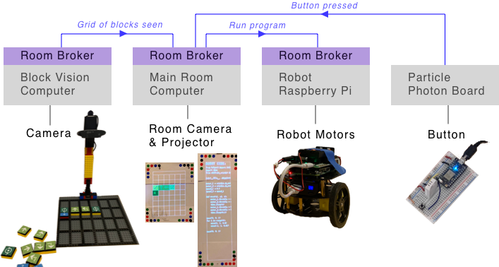

Sept 8, 2019
I am exploring the idea of "programmable spaces" — where the concept of a computer is expanded outside a little rectangular screen to fill the entire room. Interacting with the programmable space means using physical objects, not virtual ones on a screen. Bringing computing to scale of a room makes it a communal and social experience.
Previously, I experimented with clipboards representing code. It was nice to interact with physical objects but making changes still meant editing code in a text editor. The code clipboards could be moved around the physical world but they were not aware of their physical location, the location of other programs, and overall didn't use their physical affordances to change their behavior. A piece of code could be moved from a table to the wall, but it would behave the same either way.
Unless there are other affordances, the programmable space on the left is too similar to the overcrowded desktop on the right.
The rest of this update describes three experiments I did related to non-textual ways of "coding": giving programs spatial awareness, text-free robot programming, and interacting with the room using a laser pointer.
In a programmable space, programs are in the physical world so they should have properties like other physical things:
In the photo shown above, programs are represented by papers with colored dots on their corners (the dots help a camera recognize the papers). The locations of all programs are claimed to the room so any program can use that information. In this case, one program draws a line from itself to all the other programs on the same wall.
This video above shows two programs that represent data sources: one is a number that counts from 0 to 100 repeatedly and another is the angle of the paper in degrees. Both of these data sources show their current value and make their current value available to the room. Another program is a gauge graph that displays whatever number is claimed by the program above it. You can hold the gauge graph in your hand and point it at whatever data source you'd like to be shown on the graph. The spatial relation helps reinforce the idea that the graph is separate from the data, reusable, and depends on what it is pointing at. It is hard to see in the video, but when a program depends on something that it is pointing at, a blue line is projected from the paper into the space the paper is "looking at" to make the dependency visible to people in the room.
The video above shows how you could collect and visualize data over time in a programmable space. One program could be a "data store" that saves the last 20 values from whatever data source is above it. Other programs can look at the data store they are pointing at to visualize the data or produce a modified set of data. The video includes a bar graph, a filter that only keeps odd values, and a program that shows the average of the data.
Using space to control the flow of data is similar to node/graph based visual programming environments like Max/MSP where you create a program by rearranging and connecting "nodes". Nodes range from low level things like list transforms to high level things like a digital piano or a spectrogram. In either case, you can choose to ignore the logic behind the node and treat the node as a block that can be arranged to make different things - this is a nice property that is also present in this programmable space.
Another property that I'm especially interested in is a programmable space's ability to support understanding by being able to recreate itself and not depend on an order. All of the programs in the demo above are independent and magically update when they point at a program that claims something to the room in a format it can work with. A person that is new to the space can begin to understand what is going on simply by removing programs and seeing what happens. "Undoing" is a simple as putting a piece of paper back where you found it. Taking things apart and putting them back together is a great way to learn and it encourages you to get a sense of what is important without reading the code behind each program.
Even when programs have spatial awareness and can be rearranged to modify their behavior, the programs are still based on textual code and that can be intimidating. Therefore I tried out a less intimidating system where there is no text by recreating the coding robot for kids by Matatalab.
 Matatalab's Coding Set: Colored tiles with symbols on them (left) are placed on a board (middle) to program the robot (right).
Matatalab's Coding Set: Colored tiles with symbols on them (left) are placed on a board (middle) to program the robot (right).
I can't speak for how effective the Matatalab product is at teaching kids basic coding concepts, but I think their product is well designed and I admire them for making a physical and screen-free way to learn coding concepts.
My text-free robot programming environment.
To recreate this idea, I built a board, stand, and "action blocks" out of LEGOs. The action blocks had symbols on them to represent robot actions like "move forward", "turn right", or "start a loop". A program determined the current state of the board by using computer vision on pictures from a webcam that looked down at the blocks on the board. The state of the board was claimed to the room so other programs could use the information.
The robot you programmed was built from a Raspberry Pi and a robot chassis using a couple DC Motors. The start button was made from a Particle Photon board that notified the room whenever a button wired to it was pressed. Finally, other programs running in the room visualized the state of the board, converted the board into code that made the robot perform the movements, showed the compiled robot code, and told the robot to run the code when the button was pressed.
 Overall architecture of this demo. Messages syndicated between brokers are shown at the top in blue.
Each computer in the room ran the same "room message broker" that allowed programs to make claims to the room and for claims to be syndicated between computers. The only difference between the computers was what programs were running on them and what peripherals they were connected to.
I liked this text-free robot demo because it was fun to play with and because it showed some nice properties of the programmable space system:
But even without text, this text-free robot programming demo did not avoid annoying technical issues related to coding like syntax errors. The objects themselves were also "technical":
Next, I played with an interaction model that doesn't require special technical skills to connect new objects to the room.
You can define special "regions" in the room by tracing their outline with a laser pointer. An event is fired when a region is hovered/selected with the laser pointer. The laser pointer acts as a sort of cursor for the room that can be pointed anywhere in 3D space and can be seen by both people and the computer system. Programs in the room can subscribe to what regions are selected or toggled and act on that. Playing with this interaction model was inspired by the "Hypercard in the World" system by CDG Labs as described in the Laser Socks post by Glen Chiaccchieri.
In this first demo we start with a tiger face made out of construction paper. We define a region roughly around the tiger's face and name the region "tiger". Another program subscribes to facts about a laser being in a region named "tiger" and shows "RAWR!". Because the program is also a piece of paper, we can cut it to make it and the "RAWR!" bigger.
My partner and I have a map with pins of restaurants we have been to together over the years. The map is interesting by itself but static so in this demo I added some magic to allow you to select a region on the map to see the neighborhood name and the restaurants we went too. To make this, I first outlined and named each neighborhood region on the map using the laser pointer. Then I made a new program that subscribed to claims about regions being toggled and if the region name matched the name of a neighborhood the program had a list of restaurants for, it would display the list.
I liked how the laser regions allowed the map to be a normal and beautiful object by itself and only supplemented by the digital annotations if you interacted with it.
These three demos showed me that the programmable space system is a pretty good platform for prototyping new ideas and using the physical affordances of objects. I'm curious what it would be like to prototype a system were data flow is controlled physically like wires in a synthesizer or through magnetic connections in littleBits products. I'm also curious if the laser region demo could be extended to make a basic spreadsheet program on a whiteboard where the numbers would be written by hand. Spreadsheets have been the defining app of computers and I wonder what their place would be in a programmable space.
These prototypes also revealed some rough edges of the system that I'd like to iterate more on:
If you have thoughts or questions, feel free to email or reach out to me on Twitter.